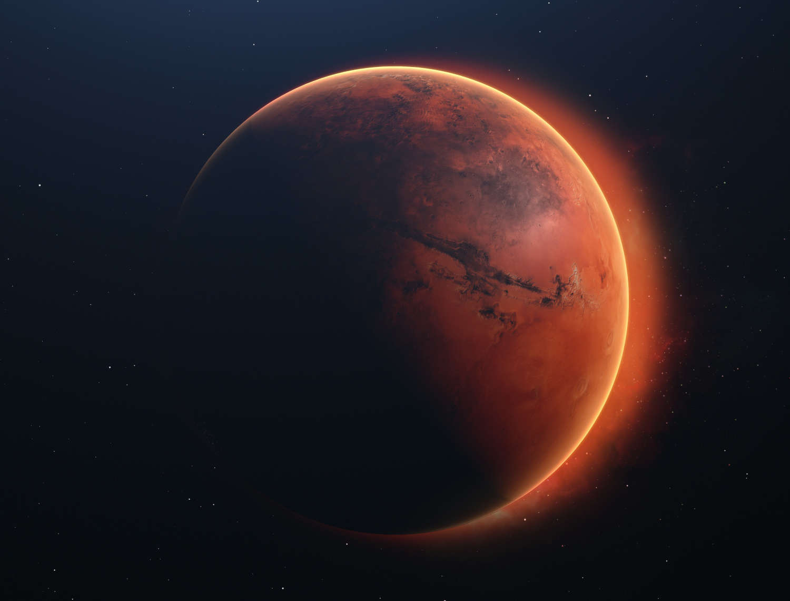
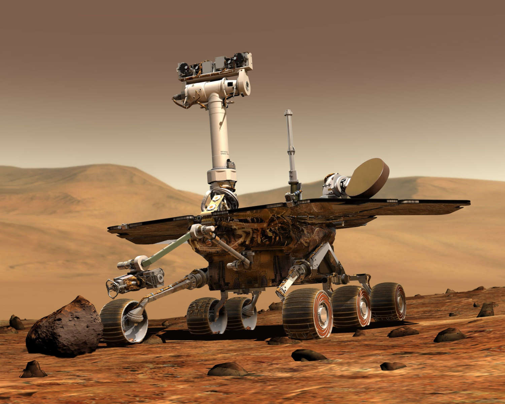
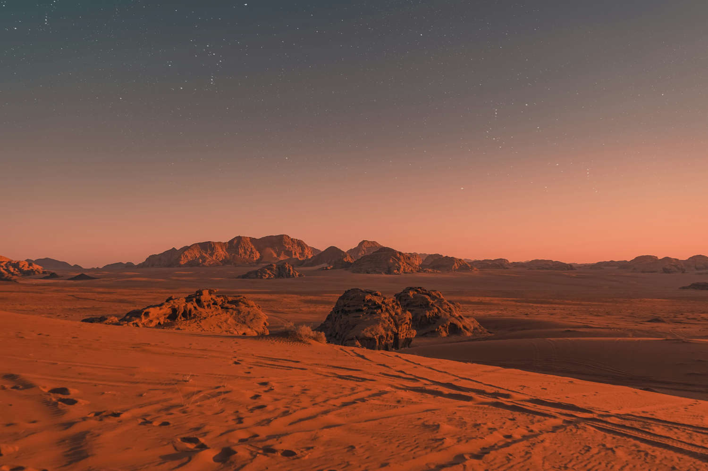

A Exploração de Marte
Marte sempre despertou a curiosidade humana por sua aparência avermelhada e por ser um dos planetas mais próximos da Terra. Durante muito tempo, tudo o que sabíamos sobre ele vinha de observações feitas à distância. Com o avanço da tecnologia, sondas, módulos de pouso e robôs passaram a explorar o planeta de perto, revelando pistas sobre sua história e sobre a possibilidade de que, no passado, Marte tenha apresentado condições favoráveis à vida.
Os primeiros passos
As primeiras missões enviadas a Marte enfrentaram muitas dificuldades, mas ajudaram a abrir caminho para as explorações seguintes. Em 1965, a Mariner 4 realizou o primeiro sobrevoo bem-sucedido do planeta e enviou imagens aproximadas de sua superfície. Anos depois, em 1976, as missões Viking 1 e Viking 2 conseguiram pousar com segurança e realizar análises diretamente no solo marciano.

A Viking 1 marcou um momento importante na exploração espacial ao transmitir imagens da superfície de Marte e coletar informações sobre o solo, a atmosfera e as condições do planeta. As missões Viking também realizaram experimentos relacionados à busca por sinais de vida, mas não encontraram uma resposta definitiva.
Os robôs entram em cena
Com o passar dos anos, a exploração de Marte passou a contar com veículos capazes de se movimentar pela superfície. Em 1997, o pequeno rover Sojourner chegou ao planeta com a missão Mars Pathfinder e mostrou que era possível utilizar robôs móveis para investigar diferentes regiões marcianas.

Depois dele vieram missões cada vez mais avançadas. Spirit e Opportunity chegaram a Marte em 2004 e percorreram diferentes regiões do planeta. Em 2012, o rover Curiosity pousou na Cratera Gale e começou a investigar se Marte já havia apresentado ambientes capazes de sustentar vida microbiana.

Em 2021, o rover Perseverance pousou na Cratera Jezero. Sua missão inclui estudar rochas antigas, buscar sinais de ambientes que poderiam ter sido habitáveis e armazenar amostras do solo e das rochas marcianas para possíveis estudos futuros. Junto com ele viajou o helicóptero Ingenuity, criado para testar a possibilidade de voar na atmosfera extremamente fina de Marte.